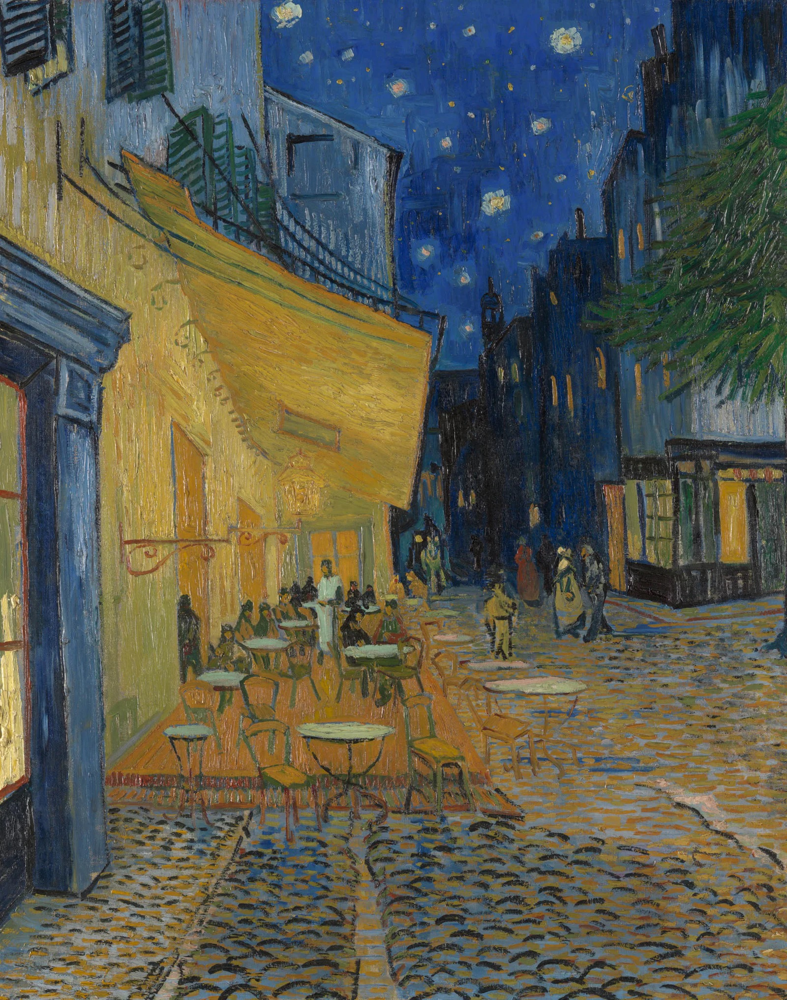

夜晚露天咖啡座 Terrace of a Café at Night
梵高 · 约1888年9月16日 · 克勒勒-米勒博物馆
Vincent van Gogh · c. 16 September 1888 · Kröller-Müller Museum, Otterlo
图片：Wikimedia Commons，公有领域 / Image: Wikimedia Commons, public domain

发现 · Discover
黄色雨棚 The awning
梵高说，煤气灯的光是黄色和橙色的，会让蓝色显得更强烈。
Van Gogh said gaslight, being yellow and orange, makes blue more intense.
星空 The stars
后来的天文研究发现，他画的星座位置，和1888年9月16日或17日夜里的星空一致。
Later astronomical research found that he painted the stars as they appeared on the night of 16 or 17 September 1888.
深蓝的房子 Blue houses
背景里深蓝色的房子，让雨棚下的暖黄色和夜空的深蓝对比更强烈。
The dark blue houses in the background strengthen the contrast between the warm yellow and the deep blue sky.
右边的小店 The shop on the right
他画了右边一家亮着灯的小店和几根树枝，却省略了旁边的罗马遗迹。
He painted a lit shop and some tree branches on the right, but left out the Roman ruins beside it.
常去的咖啡馆 A familiar café
他写信给画家朋友欧仁·博赫，说画的是论坛广场上"我们常去"的那家咖啡馆。博赫的画像，就挂在梵高卧室的墙上。
He wrote to his painter friend Eugène Boch that this was the café on Place du Forum "where we used to go". Boch's portrait hangs on the wall of Van Gogh's bedroom.
现场作画 Painted on the spot
他是在夜里、在黑暗中现场画的，因为颜色在白天和晚上看起来不一样。
He painted it on the spot, in the dark, because colours look different at night than by day.
故事 · The story
ACT I 第一幕 · 没有黑色的夜 A night without black
梵高一直想画一幅夜景，但不想用传统的黑色和灰色，而是用丰富的颜色。
Van Gogh had long wanted to paint a night scene, not in black and grey, but full of colour.
约1888年9月16日 · 克勒勒-米勒博物馆 / c. 16 September 1888 · Kröller-Müller Museum, Otterlo
ACT II 第二幕 · 在黑暗中画 Painting in the dark
他在夜里来到论坛广场，在煤气灯下现场作画。他写信告诉妹妹威尔，他非常享受在夜里现场画画。
He went to Place du Forum at night and painted by gaslight. He wrote to his sister Wil that he enormously enjoyed painting on the spot at night.
ACT III 第三幕 · 今天的广场 The square today
今天，你可以站在广场东北角，也就是他当年支画架的地方。这家咖啡馆在1990至1991年按画中的样子重新翻修过。
Today you can stand at the north-east corner of the square, where he set up his easel. The café was refurbished in 1990–91 to look like the painting.
夜，原来可以有这么多颜色。 The night has so many colours.
作品档案 · Artwork record
| 画家（生卒年） · Artist (dates) | 文森特·梵高（1853–1890） / Vincent van Gogh (1853–1890) |
|---|---|
| 画名 · Title | 夜晚露天咖啡座（论坛广场） / Terrace of a Café at Night (Place du Forum) |
| 年份 · Date | 约1888年9月16日，阿尔勒 / c. 16 September 1888, Arles |
| 材质 · Medium | 布面油画 / Oil on canvas |
| 尺寸 · Dimensions | 80.7 × 65.3 cm |
| 收藏地 · Collection | 克勒勒-米勒博物馆，荷兰奥特洛 / Kröller-Müller Museum, Otterlo |
关于画家 · About the artist
文森特·梵高（1853–1890），荷兰画家。他将近27岁才开始画画，短短十年留下了大量作品。1888年他来到法国南部的阿尔勒，在那里画出了许多最著名的画。
Vincent van Gogh (1853–1890) was a Dutch painter. He began painting at around 27 and left a huge body of work in just ten years. In 1888 he moved to Arles in the south of France, where he painted many of his best-known works.
更多梵高的画 · More by Vincent van Gogh